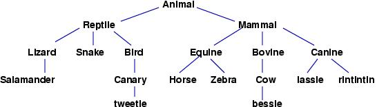
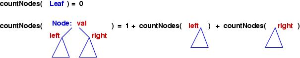

Tree data structures
A tree data structure is a powerful tool for organizing
data objects based on keys. It is equally useful for organizing
multiple data objects in terms of hierarchical relationships (think
of a ``family tree'', where the children are grouped under their
parents in the tree).
Trees are usually drawn pictorially like this (again, think of a
``family tree''), where data can be placed where the asterisks appear:
*
/ \
* *
/ \ /|\
* ** * *
/\ ...
...
The asterisks represent nodes; the node at
the top is the root, the tree's ``starting point.''
The arcs between nodes are called branches.
A node that has no branches underneath it is called a leaf.
Real trees grow from their root upwards to the sky, but computer-science
trees grow from the root downwards.
Here is an example of a tree of species, from zoology:

When we examine a non-leaf node, we see that the node has trees growing
underneath it, and we say that the node has children subtrees.
For example, the root node, ``Animal'', has two children subtrees.
Tree structures make an excellent alternative to arrays,
especially when the data stored within them is keyed or has internal
structure that allows one element to be related to, or ``saved within''
another.
Applications of Trees
-
Trees can hold objects that are sorted by their keys.
The nodes are ordered so that all keys in a node's left subtree
are less than the key of the object at the node, and all
keys in a node's right subtree are greater than
the key of the object at the node.
Here is an example of a tree of records, where each record
is stored with its integer key in a tree node:
Here, the leaves are used as ``end points'' and hold nothing.
We call such a tree an ordered tree or a search tree.
The tree drawn above is ordered on the integer keys saved in the nodes.
The advantages of ordered trees over sorted arrays are:
-
both insertions (and retrievals) of objects by key take on the average
log2N time, where N is the number of objects stored.
-
the tree naturally grows to hold an arbitrary, unlimited number of
objects.
-
Trees can hold objects that are located by keys that are sequences.
For example, we might have some books with these Library of Congress
catalog numbers:
QA76 book1
QA7 book2
Q17 book3
B1 book4
Z4 book5
The books's keys are sequences, and the sequences label the branches
of a tree that holds the books:
*
|
+-------+----------+
B | Q | Z |
* * *
1 | 1 / \ A 4 |
book4 * * book5
7 | | 7
book3 book2
| 6
book1
Books can be stored at nodes or leaves, and not all nodes hold a book
(e.g., Q1).
This tree is called a spelling tree, and it has the advantage
that the insertion and retrieval time of an object is related only
to the length of the key.
-
A tree can represent a structured object, such as a house that must be
explored by a robot or a human player in an adventure game:
house's entrance----upper hallway----bedroom---closet---...
| | |
| | +-----private bath---...
| +---study---...
|
lower hallway---kitchen---...
|
+---lounge---...
We might imagine a robot entering the house at its entrance, knowing
nothing about what lies inside. The robot's data base looks like this:
house's entrance
Perhaps the robot explores the upper hallway, bedroom, and private bath.
Its data base expands with the knowledge learned during the exploration:
house's entrance----upper hallway----bedroom---closet---...
|
+-----private bath---...
As the robot explores more and more of the house, its database, a tree,
grows to include the knowledge. A tree structure is useful for
holding the knowledge, because trees can grow dynamically, spawning
branches and subtrees as needed.
A tree like the one above is sometimes called a search tree.
Indeed, the search trees seen in the earlier lectures on stacks and
queues also fit into this category.
-
Trees are used to represent phrase structure of sentences, which is
crucial to language processing programs. Here is the phrase-structure
tree (``parse treee'') for the Java statements
int x;
x = 3 + y;
STATEMENT SEQUENCE
/ \
DECLARATION ASSIGNMENT
/ \ / \
TYPE VARIABLE VARIABLE EXPRESSION
| | | / | \
int x x NUMERAL + VARIABLE
| |
3 y
The Java compiler checks the grammatical structure of a Java program
by reading the program's words and attempting to build the program's
parse tree. If successfully contructed, the parse tree is used as a guide
to help the Java compiler generate the byte code that one finds in the
program's .class file.
-
An operating system maintains a disk's file system as a tree,
where file folders act as tree nodes:

The tree structure is useful because it easily accommodates the creation
and deletion of folders and files.
The tree forms listed above have varying
internal structure,
but all are variations on the same basic idea --- an inductive
definition, which we now study in its purest form.
Binary Trees
We begin study with a form of tree whose nodes
have exactly two subtrees. Here is the inductive
definition:
-
A BinaryTree object is
-
A Leaf-structure, representing an empty tree;
or
-
A Node-structure, which contains:
-
an object, called the ``value''
-
a BinaryTree object, called the ``left subtree'';
-
a BinaryTree object, called the ``right subtree'';
Here is a picture of a binary tree, where integers are saved
as values at the nodes, and leaves hold no integers at all:
Sometimes, the arcs that enamate from the nodes are labelled
so that we can describe subtrees; here, each node possess a
left subtree and a right subtre..
Since trees are inductively defined, the above tree can be drawn
as a layered structure:
Node----------------------------------------------------------------+
| 9 |
| Node--------------+ Node------------------------------+ |
| | 5 | | 12 | |
| | Leaf Leaf | | Leaf Node---------------+ | |
| +-----------------+ | | 15 | | |
| | | Leaf Leaf | | |
| | +------------------+ | |
| +---------------------------------+ |
+-------------------------------------------------------------------+
Another representation of the above tree is
Node( 9, Node( 5, Leaf(), Leaf() )
Node( 12, Leaf(),
Node( 15, Leaf(), Leaf() )
)
)
This looks more like Java code, and it shows the nested structure of the
tree.
Processing a binary tree by recursion
There is a basic pattern for computing on binary trees; the pattern
follows the inductive definition. Here is what it looks like in
equational form:
process( Leaf ) = ...some simple answer...
process( Node(val, left, right) ) = ...compute an answer from val, process(left), and process(right)...
Here is an example, which counts the number of Node-objects within a
binary tree:
countNodes( Leaf ) = 0
countNodes( Node(val, left, right) ) = 1 + countNodes(left) + countNodes(right)
The intuition behind the schema is simple: To count all the nodes in
a big tree, we split the task into pieces:
-
count all the nodes in the slightly smaller, left subtree;
-
count all the nodes in the slightly smaller, right subtree;
-
add together these counts, plus one, for the root.
Here is a picture of the countNodes schema:

You should apply the schema to the above example tree and calculate
that it has four nodes.
The classes for binary trees
Here is the coding of the binary-tree data structure, based on the
inductive definition seen earlier. First, we use an abstract class
to name the data type of binary tree:
package BinTree;
/** BinaryTree defines the data type of binary trees:
* (i) a leaf, or
* (ii) a node that holds a value, a left subtree, and a right subtree.
* Methods listed below should be overridden as needed by subclasses. */
public abstract class BinaryTree
{ /** value returns the value held within a tree node
* @return the value */
public Object value()
{ throw new RuntimeException("BinaryTree error: no value"); }
/** left returns the left subtree of this tree
* @return the left subtree */
public BinaryTree left()
{ throw new RuntimeException("BinaryTree error: no left subtree"); }
/** right returns the right subtree of this tree
* @return the right subtree */
public BinaryTree right()
{ throw new RuntimeException("BinaryTree error: no right subtree"); }
}
First, here is the coding for leaf objects:
package BinTree;
/** Leaf models a tree leaf---an empty tree */
public class Leaf extends BinaryTree
{ /** Constructor Leaf constructs the empty tree */
public Leaf() { }
}
Next, we write the coding for constructing node objects:
package BinTree;
/** Node models a nonempty tree node, holding a value and two subtrees */
public class Node extends BinaryTree
{ private Object val;
private BinaryTree left;
private BinaryTree right;
/** Constructor Node constructs the tree node
* @param v - the value held in the node
* @param l - the left subtree
* @param r - the right subtree */
public Node(Object v, BinaryTree l, BinaryTree r)
{ val = v;
left = l;
right = r;
}
public Object value()
{ return val; }
public BinaryTree left()
{ return left; }
public BinaryTree right()
{ return right; }
}
Notice that we have not
supplied methods to modify a tree structure
after the tree is first constructed. Surprisingly, these are not crucial ---
we can always build new trees from scratch, as we will see. (These issues
are addressed a bit later in this lecture.)
Here is the Java coding of the countNodes function, which
was developed in the previous subsection:
/** countNodes returns the number of Node-objects within a tree
* @param t - the tree analyzed
* @return the number of Nodes within t */
public int countNodes(BinaryTree t)
{ int answer;
if ( t instanceof Leaf )
{ answer = 0; }
else // t must be a Node:
{ int left_answer = countNodes(t.left());
int right_answer = countNodes(t.right());
answer = 1 + left_answer + right_answer;
}
return answer;
}
You can find the classes for building binary trees here:
In the directory,
look at the BinTree directory for the basic classes that
define binary trees. The Test.java application shows
how to build some trees and use them as arguments to methods.
The TreeCalculator.java class
contains codings of methods that count and print trees.
Printing a tree's contents: in-order, pre-order, and post-order
We might wish to print the contents of a tree's nodes:
printNodes( Leaf ) = nothing to print
printNodes( Node(value, left, right) ) = printNodes(left);
print the value;
printNodes(right);
The printing proceeds by printing the left subtree in its entirety,
followed by the value at the root, followed by the right subtree.
This is called an in-order tree traversal.
In Java,
/** printInOrder prints all the values held within a binary tree;
* the tree is traversed left-to-right _in-order_ (value printed in middle)
* @param t - the tree traversed and printed */
public void printInOrder(BinaryTree t)
{ if ( t instanceof Leaf )
{ } // no value to print
else // t must be a Node:
{ printInOrder(t.left()); // print nodes in left subtree
System.out.println( (t.value()).toString() ); // print node's value
printInOrder(t.right()); // print nodes in right subtree
}
}
For example, the tree seen earlier would print like this:
5
9
12
15
Here is a variation on the printing:
print2( Leaf ) = nothing to print
print2( Node(value, left, right) ) = print the value;
print2(left);
print2(right);
This is called a pre-order traversal and would generate
9
5
12
15
for the example tree.
There is a third variation, post-order traversal, which prints a
node's value after the contents of the left and right subtrees are printed.
You should formulate the algorithm for post-order traversal.
Modifying a tree---building a new tree in terms of an existing one
Of course, it is always easy to build a new tree using smaller trees
that we have already constructed. For example,
say that we have this tree:
BinaryTree right_subtree = new Node("c", new Leaf(), new Leaf());
It is easy to use right_subtree to build a larger tree:
BinaryTree t = new Node("a", new Leaf(), right_subtree);
Tree t holds right_subtree as its right subtree.
But the situation get more interesting if we wish to add new ``growth''
in place of one of the leaves already embedded within tree t
For example,
say that we wish to revise tree t so that its left
subtree, a leaf, is replaced by a node that holds "b".
First approach: mutable trees
It is tempting to wish for
a method, say, setLeft, so that we might just say:
BinaryTree new_left_subtree = new Node("b", new Leaf(), new Leaf());
t.setLeft(new_left_subtree);
Of course, we can indeed write a setLeft method
(and for that matter, a setRight method) and add them to
class Node:
public class Node extends BinaryTree
{ private Object val;
private BinaryTree left;
private BinaryTree right;
...
public void setLeft(BinaryTree new_left)
{ left = new_left; }
public void setRight(BinaryTree new_right)
{ right = new_right; }
}
But before we seize on this approach exclusively, we should consider
another, clever way of replacing a subpart of an existing tree.
Second approach: immutable trees
Once again, here is tree t:
BinaryTree right_subtree = new Node("c", new Leaf(), new Leaf());
BinaryTree t = new Node("a", new Leaf(), right_subtree);
Now, we build the new_left_subtree, just like before:
BinaryTree new_left_subtree = new Node("b", new Leaf(), new Leaf());
Now we wish to alter t so that its left leaf is replaced by
new_left_subtree.
But we do not use setLeft to alter t.
Instead, we rebuild the parts of t that rest above
the new_left_subtree and reuse the other parts:
t = new Node(t.value(), new_left_subtree, t.right());
This assignment statement assigns a new tree to variable
t --- the tree's root value is exactly the root value
that t previously held. Also, the tree's right subtree
is exactly the same subtree that t previously held.
But t's old left subtree, the leaf, is forgotten
and new_left_subtree is used instead.
There is no need for a setLeft method --- we build a new tree
instead.
Comparison
The first approach, which used a setLeft method,
employs mutable trees; the second method, which rebuilds the parts
of the tree that rest above the altered part,
uses
immutable trees.
What are the comparative aspects of the two approaches?
For mutable trees:
-
The program maintains only one (big) tree, because the
mutation operations, setLeft and setRight,
change links in the heap.
-
For some activities, e.g., tree balancing (where a new root node must
be installed), the mutations can be done quickly with programming
``tricks'' that cleverly reset a few links.
Here are the important aspects of immutable trees:
-
A program can
maintain multiple trees, and the trees can share each other's
substructures.
(This happens in text editing programs and other interactive programs:
the state of the edited document is stored internally as a tree, and when you
make a modification, a new tree is built that shares almost all of the
old tree but also contains the modification you made. If you press
the ``undo'' button to undo the modification,
the ``current'' tree is forgotten and the
``earlier'' tree is used instead. The ability to repeatedly
undo is made possible by multiple trees that share huge parts of
each other.)
-
In Java, there is no penalty to constantly
building new trees from pieces of other trees --- the Java garbage
collector reclaims those pieces of trees that are discarded and are
unreferenced by the program.
We will study how to build both mutable and immutable trees.